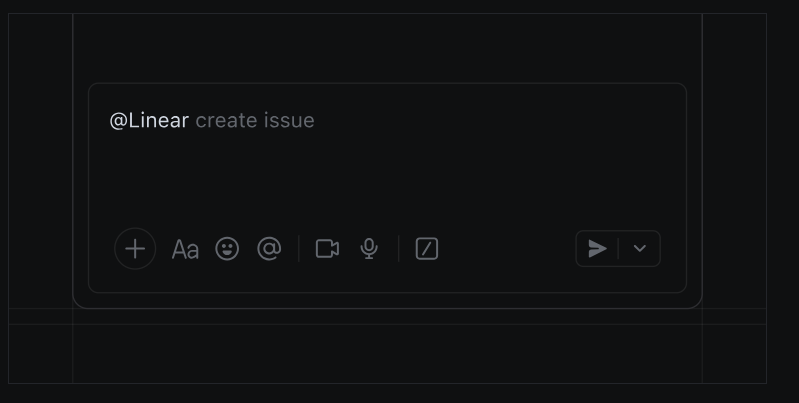
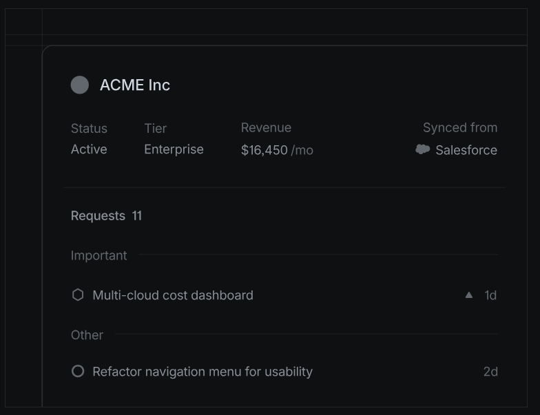
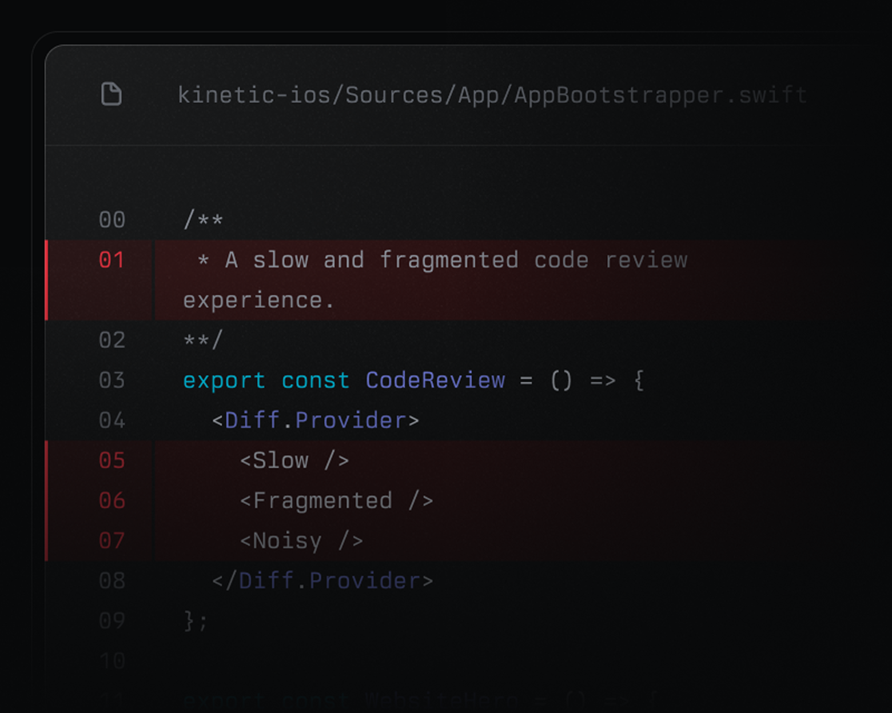
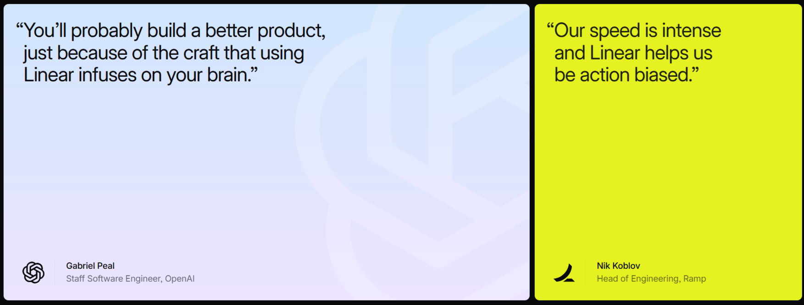

The product development
system for teams and agents
Purpose-built for planning and building products.
Designed for the AI era.

Purpose-built for planning and building products.
Designed for the AI era.
Powering the companies building the future

Linear is shaped by the practices and principles of world-class product teams.

Designed for workflows shared by humans and agents. From drafting PRDs to pushing PRs.

Reduces noise and restores momentum to help teams ship with high velocity and focus.
Automatically turn conversations and customer
feedback into actionable issues that are instantly
routed,
labeled, and prioritized for the right team.
Learn more

Tech specs
The Linear Agent is an AI agent available in Linear's intake integrations. It converts supported conversations into Linear issues by extracting requests, summarizing context, and populating issue fields.

LINEAR AGENT IN SLACK
| Integration | Details |
| AI | Seamless integration with Linear's AI capabilities |
| Slack | Converts Slack threads into issues by mentioning @Linear. The agent uses the full thread context to auto-generate issues with title, summary, and supporting details. Conversations containing multiple distinct requests can generate multiple issues. |
| Microsoft Teams | Converts Teams conversations into issues by mentioning @Linear. The agent uses the full conversation context to auto-generate issues with title, summary, and supporting details. Conversations containing multiple distinct requests can generate multiple issues. |
| Intercom | Converts Intercom conversations into issues. The agent analyzes the full conversation and files issues for relevant bugs or feature requests. Issues include concise summaries, key details, and relevant screenshots. Conversations containing multiple distinct requests can generate multiple issues. |
Customer Requests links customer feedback and customer metadata to issues and projects in Linear. Requests can be created manually or through supported integrations, and customer data can be used for filtering, prioritization, and reporting across the workspace.

CUSTOMER PAGE WITH ASSOCIATED ISSUES AND PROJECTS
Customer Requests works with a variety of integrations to create requests and optionally sync customer attributes.

Tech Specs
Triage is an AI-powered inbox for teams to manage unplanned work such as incoming bug reports and feature requests. When an issue is created by an integration or by a user not belonging to a specific Linear team, it will appear here. Triage offers an opportunity to review, update, and prioritize issues before they are added to the team's workflow.
Linear Asks lets anyone in a Slack or Teams workspace raise a request without needing a Linear seat, so requests from across the company can reach the right team.
Plan and navigate from idea to launch. Align your team with product initiatives, strategic roadmaps, and
clear, up-to-date PRDs.
Learn more

Build and deploy AI agents that work alongside you as teammates. Work on complex tasks together or delegate entire issues end-to-end. Learn more
Features
Tech specs
The Linear Agent is an AI agent available in Linear's intake integrations. It converts supported conversations into Linear issues by extracting requests, summarizing context, and populating issue fields.
LINEAR AGENT IN SLACK
| Integration | Details |
| AI | Seamless integration with Linear's AI capabilities |
| Slack | Converts Slack threads into issues by mentioning @Linear. The agent uses the full thread context to auto-generate issues with title, summary, and supporting details. Conversations containing multiple distinct requests can generate multiple issues. |
| Microsoft Teams | Converts Teams conversations into issues by mentioning @Linear. The agent uses the full conversation context to auto-generate issues with title, summary, and supporting details. Conversations containing multiple distinct requests can generate multiple issues. |
| Intercom | Converts Intercom conversations into issues. The agent analyzes the full conversation and files issues for relevant bugs or feature requests. Issues include concise summaries, key details, and relevant screenshots. Conversations containing multiple distinct requests can generate multiple issues. |
Customer Requests links customer feedback and customer metadata to issues and projects in Linear. Requests can be created manually or through supported integrations, and customer data can be used for filtering, prioritization, and reporting across the workspace.
CUSTOMER PAGE WITH ASSOCIATED ISSUES AND PROJECTS
Customer Requests works with a variety of integrations to create requests and optionally sync customer attributes.
Tech Specs
Triage is an AI-powered inbox for teams to manage unplanned work such as incoming bug reports and feature requests. When an issue is created by an integration or by a user not belonging to a specific Linear team, it will appear here. Triage offers an opportunity to review, update, and prioritize issues before they are added to the team's workflow.
Linear Asks lets anyone in a Slack or Teams workspace raise a request without needing a Linear seat, so requests from across the company can reach the right team.
Streamline code reviews with clear diffs, better context, and fewer back-and-forth comments. Keep
PRs moving without sacrificing quality.
Learn more



Coding sessions are the shortest path
from issue to diff. Assign a task to..
Loops are recurring agent workflows
for teams. They now respond to more...
An active workspace can create a
significant amount of notifications..
Linear Agent can now set up, run, and
test your code before returning its..

Linear powers over 40,000 product teams. From ambitious startups to major enterprises.
Customer stories